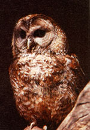
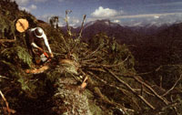

Razing The Forest Primeval
July/August 1988
Earth Diary
By Tom Turner
The Pacific Northwest always seems to have noisy environmental disputes under way-in state legislatures, in the newspapers, in the courts, in better saloons and taverns everywhere. A perennial topic is forestry, and mid-1988 is no exception.
Much of the region has been heavily logged, to the point that a flight over western Oregon, for example, reveals a landscape that looks the way I did when, at the age of six, my best friend offered to give me a free haircut. Large patches have been skinned to reveal lumpy ground, devoid of most everything but a few weeds. Regeneration of the trees is painfully slow.
Environmentalists have struggled long and hard to find a way to slow the clear-cut express. They have succeeded in helping establish four national parks and several wilderness areas in the 19 national forests in Oregon and Washington. Still, the felling of forests-particularly the valuable old-growth forests where a single tree can provide $2,000 worth of lumber-continues apace, even though perhaps only 10% of the region's original stock of old growth remains.
In recent years, a new player has emerged on the field of debate, the northern spotted owl, considered by biologists a reliable indicator of the health of old-growth forests in general. The owl requires old-growth forests to survive, for reasons that are not terribly well understood. What is well understood is that as the forests have been leveled, the population of spotted owls has crashed-to the point where it is threatened with extinction, in the considered opinion of every expert in the field.
Despite this fact, pleas to add the owl to the list of threatened and endangered species have fallen on deaf ears, undoubtedly because of the economic and political power of the timber industry in the region. Having nowhere else to turn, conservation groups have recently turned, once again, to the courts.
Lawyers for the Sierra Club Legal Defense Fund filed a lawsuit in early May against the U.S. Fish and Wildlife Service. The suit asks the court to order the federal agency to add the northern spotted owl to the list of threate ned and endangered species. The case set off storms of controversy.
Admittedly, the lawsuit is a drastic step, and-assuming it succeeds, which it may or may not-it may, indeed, impose short-term economic hardships on some elements of the timber industry. The organizations that brought the suit-including the Sierra Club, the Wilderness Society, the Oregon Natural Resources Council, Headwaters and many Audubon Society chapters in Oregon and Washington-understand this all too well.
They are not, however-as charged by industry spokespersons-a bunch of hardhearted zealots who love birds more than people. Rather, they're like the Audubon Society official who once was asked if he liked birds or people better. "I like people who like birds," he answered.
In addition, they're people who clearly understand the following:
The spotted owl population in the Northwest has crashed dramatically and alarmingly in the past few decades, and if drastic steps aren't taken quickly, it may be too late to save the species. (In denying the groups' petition to "list" the species, the FWS relied on a study by a single scientist who later accused the agency of misrepresenting his work.)
Spotted owls depend on old-growth forests to survive. Industry, in its wisdom, has eliminated virtually every acre of old growth on private land in the Northwest. That means that essentially all the habitat suitable for spotted owls is on federal land.
Decisions on whether to add species to the endangered species list are required by law to be based strictly on biological science-not economics, not politics, not whether a species is cute or cuddly. Fish and Wildlife Service officials have acknowledged, however, that politics and economics played a considerable role in their decision. If that's true, it's illegal.
The timber industry in the Pacific Northwest has begun to adjust to the post-old-growth era already, and it will have to complete that transition expeditiously whether or not it is allowed to mow down the last of the old growth and the owls and other creatures with it. That means retooling equipment in sawmills so they can handle smaller logs efficiently. It means altering equipment used in the field to handle the smaller, second-growth trees. It means, in essence, putting the idea of cutting down thousand-year-old trees out of mind, forever.
To repeat, this will happen soon anyway. If there were no lawsuit, if there were no protestors installing themselves in the tops of old trees in a desperate attempt to save them, if there were no resistance whatever to logging old growth, industry could keep cutting for only a handful of years at most.
And when time ran out, except for the remnants now protected in wilderness areas and national parks, the trees would be gone, the owls would be gone, and the loggers and the mills would be facing exactly the same situation they will face if the suit succeeds.
The difference is that if the lawsuit succeeds, there will be a small but respectable amount of primeval forest, complete with spotted owls and a hundred other creatures, to proudly show to our children and grandchildren. We'll be able to tell them we took the painful but necessary steps, and we took them in time.
Tom Turner, a writer and editor with 20 years' experience in the environmental field, is staff writer for the Sierra Club Legal Defense Fund, an independent environmental law firm that represents many organizations across the country. It is supported principally by private donations. For more information, write Sierra Club Legal Defense Fund, 2044 Fillmore St., San Francisco, CA 94115.
 The spotted owl and Oregon's old-growth timber face a common (an all too common!) enemy. |
 The timber industry must adapt to the post-old-growth era. |
 |